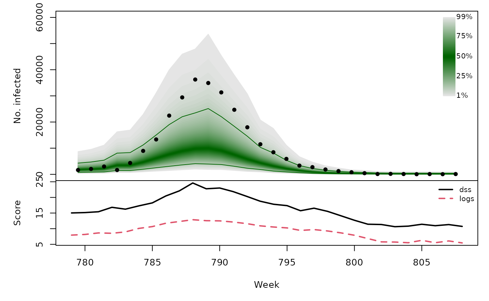
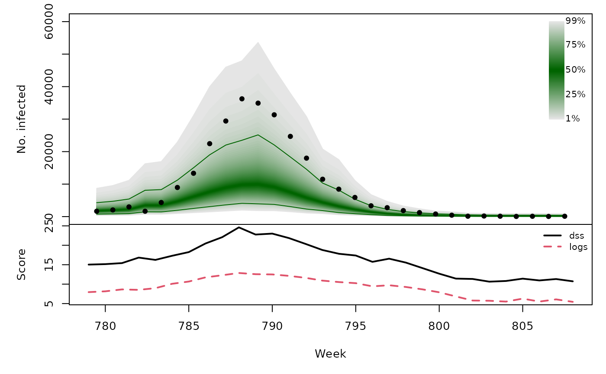

Forecasting Swiss ILI counts using prophet::prophet
Sebastian Meyer
2021-03-31
Source:vignettes/CHILI_prophet.Rmd
CHILI_prophet.Rmd
options(digits = 4) # for more compact numerical outputs
library("HIDDA.forecasting")
library("ggplot2")
source("setup.R", local = TRUE) # define test periods (OWA, TEST)In this vignette, we use forecasting methods provided by:
The corresponding software reference is:Taylor S, Letham B (2021). prophet: Automatic Forecasting Procedure. R package version 1.0, https://CRAN.R-project.org/package=prophet.
Modelling
prophet uses a Gaussian likelihood, so we will work with log-counts as in ARIMA.
## [1] "2000-12-26" "2001-12-25" "2002-12-24" "2003-12-23" "2004-12-21"
## [6] "2005-12-27" "2006-12-26" "2007-12-25" "2008-12-23" "2009-12-22"
## [11] "2010-12-28" "2011-12-27" "2012-12-25" "2013-12-24" "2014-12-23"
## [16] "2015-12-22" "2016-12-27"So for consistency with the other models we define holidays from 21 to 28 December each year.
set.seed(1411171)
christmas <- data.frame(
holiday = "Christmas",
ds = as.Date(paste0(2000:2016, "-12-21")),
lower_window = 0,
upper_window = 7
)
prophetfit_control <- prophet(
yearly.seasonality = TRUE, weekly.seasonality = FALSE, daily.seasonality = FALSE,
holidays = christmas,
mcmc.samples = 0, # invokes rstan::optimizing (fast MAP estimation)
interval.width = 0.95, fit = FALSE)
prophetfit <- fit.prophet(
m = prophetfit_control,
df = data.frame(ds = index(CHILI), y = log(CHILI))
)
prophetfitted <- predict(prophetfit)
prophet_plot_components(prophetfit, prophetfitted)
CHILIdat <- fortify(CHILI)
CHILIdat[c("prophetfitted","prophetlower","prophetupper")] <-
exp(prophetfitted[c("yhat", "yhat_lower", "yhat_upper")])
##plot(prophetfit, prophetfitted)
ggplot(CHILIdat, aes(x=Index, ymin=prophetlower, y=prophetfitted, ymax=prophetupper)) +
geom_ribbon(fill="orange") + geom_line(col="darkred") +
geom_point(aes(y=CHILI), pch=20) +
scale_y_sqrt(expand = c(0,0), limits = c(0,NA))
One-week-ahead forecasts
We compute 213 one-week-ahead forecasts from 2012-W48 to 2016-W51 (the OWA period).
For each time point, forecasting with prophet takes about 3 seconds, i.e., computing all one-week-ahead forecasts takes approx. 10.7 minutes …
set.seed(1411172)
prophetowa <- cross_validation(
model = prophetfit, horizon = 1,
period = 1, initial = OWA[1] - 1, units = "weeks"
)
## add forecast variance (calculated from prediction interval)
prophetowa$sigma <- with(prophetowa, (yhat_upper-yhat_lower)/2/qnorm(0.975))
## save results
save(prophetowa, file = "prophetowa.RData")prophet forecasts for the log-counts are approximately Gaussian with mean yhat and variance sigma^2 => back-transformation via exp() is log-normal
.PIT <- plnorm(exp(prophetowa$y), meanlog = prophetowa$yhat, sdlog = prophetowa$sigma)
hist(.PIT, breaks = seq(0, 1, 0.1), freq = FALSE, main = "", xlab = "PIT")
abline(h = 1, lty = 2, col = "grey")
prophetowa_scores <- scores_lnorm(
x = exp(prophetowa$y),
meanlog = prophetowa$yhat, sdlog = prophetowa$sigma,
which = c("dss", "logs"))
summary(prophetowa_scores)## dss logs
## Min. : 9.88 Min. : 5.09
## 1st Qu.:11.87 1st Qu.: 6.50
## Median :14.06 Median : 7.66
## Mean :15.00 Mean : 8.03
## 3rd Qu.:16.89 3rd Qu.: 9.19
## Max. :73.02 Max. :15.09Note that discretized forecast distributions yield almost identical scores (essentially due to the large counts):
prophetowa_scores_discretized <- scores_lnorm_discrete(
x = exp(prophetowa$y),
meanlog = prophetowa$yhat, sdlog = prophetowa$sigma,
which = c("dss", "logs"))
summary(prophetowa_scores_discretized)## dss logs
## Min. : 9.88 Min. : 5.09
## 1st Qu.:11.87 1st Qu.: 6.50
## Median :14.06 Median : 7.66
## Mean :15.00 Mean : 8.03
## 3rd Qu.:16.89 3rd Qu.: 9.19
## Max. :73.02 Max. :15.09
prophetowa_quantiles <- sapply(X = 1:99/100, FUN = qlnorm,
meanlog = prophetowa$yhat,
sdlog = prophetowa$sigma)
osaplot(
quantiles = prophetowa_quantiles, probs = 1:99/100,
observed = exp(prophetowa$y), scores = prophetowa_scores,
start = OWA[1]+1, xlab = "Week", ylim = c(0,60000),
fan.args = list(ln = c(0.1,0.9), rlab = NULL)
)
Long-term forecasts
set.seed(1411173)
prophetfor <- lapply(TEST, function (testperiod) {
t0 <- testperiod[1] - 1
fit0 <- fit.prophet(
m = prophetfit_control,
df = data.frame(ds = index(CHILI), y = log(CHILI))[1:t0,]
)
fc <- predict(fit0, data.frame(ds = index(CHILI)[testperiod]))
## add forecast variance (calculated from prediction interval)
fc$sigma <- with(fc, (yhat_upper-yhat_lower)/2/qnorm(0.975))
list(testperiod = testperiod,
observed = as.vector(CHILI[testperiod]),
yhat = fc$yhat, sigma = fc$sigma)
})
invisible(lapply(prophetfor, function (x) {
PIT <- plnorm(x$observed, meanlog = x$yhat, sdlog = x$sigma)
hist(PIT, breaks = seq(0, 1, 0.1), freq = FALSE,
main = format_period(x$testperiod, fmt = "%Y", collapse = "/"))
abline(h = 1, lty = 2, col = "grey")
}))
t(sapply(prophetfor, function (x) {
quantiles <- sapply(X = 1:99/100, FUN = qlnorm,
meanlog = x$yhat, sdlog = x$sigma)
scores <- scores_lnorm(x = x$observed,
meanlog = x$yhat, sdlog = x$sigma,
which = c("dss", "logs"))
osaplot(quantiles = quantiles, probs = 1:99/100,
observed = x$observed, scores = scores,
start = x$testperiod[1], xlab = "Week", ylim = c(0,60000),
fan.args = list(ln = c(0.1,0.9), rlab = NULL))
colMeans(scores)
}))## dss logs
## [1,] 15.69 8.733
## [2,] 15.57 8.225
## [3,] 16.19 9.079
## [4,] 18.27 9.598 
